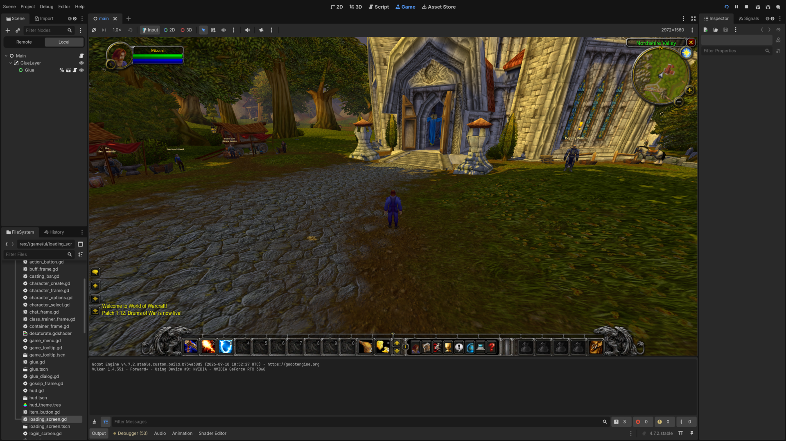
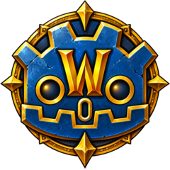

Clients
Screenshots

How it works

WoWdot is a C++ GDExtension that opens your MPQ archives, decodes the DBC tables, BLP textures, M2 and WMO models, ADT terrain, and speaks the game's network protocol.
It then exposes these to GDScript with Godot signals for gameplay, like the interface, world, and combat.
What works
You can log in, create a character, quest, fight, loot, group, train and fly on an unmodified vMaNGOS server.
- Login. Account login, realm list, character create, select and delete, loading screens, glue screen music.
- World. Streaming terrain, buildings and doodads, water, a sky with day and night, weather, zone music and ambience.
- Characters. Skin, hair and facial hair, equipment on the model, sheathing, mounts, 3D portraits.
- Movement. Running, jumping, falling, swimming and taxi flights, with other players moving smoothly.
- Zoning. Continents, dungeons and portals, with the loading screen in between.
- Death. Releasing, finding and reclaiming your corpse, resurrection offers, the spirit healer.
- Combat. Targeting, auto attack, spell casts with cooldowns and the global cooldown, buffs and debuffs, floating combat text, the combat log.
- HUD. Action bars with pages and side bars, the stance bar, player, target and target of target frames, cast bar, minimap, tooltips, reputation watch bar.
- Chat. Say, yell, party, guild and whispers, channels, and emotes such as /dance.
- Panels. Character sheet, bags, spellbook, talents, quest log, skills, reputation, world map, video and sound options.
- NPCs. Gossip, quests, vendors with buyback and repair, class trainers, flight masters, bankers.
- Groups. Party invites, party frames, the loot window, quest sharing.
What's next
In the order they are planned:
- Ribbon trails. The vanilla emitters are read; drawing them is still to come.
- Elevators and lifts. They animate from a table of their own rather than a taxi path, so they stand still where boats and zeppelins already sail.
- Boats between maps. Routes that cross from one continent to another.
After that come the content tools: custom spells, creatures, items and quests authored in Godot, and map editing in the Godot editor.
Download and play
Grab the Windows or Linux build, or browse every release.
- Copy the files from the zip into your own 1.12.1 client folder, next to its
Datafolder. - Run
WoWGD.exeorWoWGD.x86_64. - Enter the realmlist of the server you play on and log in.
Nothing else to install on either platform.
Your data, your install
WoWdot ships no Blizzard code, archives or extracted assets.
The clients read your MPQ archives and talk to whatever server you point them at.
Open source, but later
WoWdot will be MIT licensed.
The source is not published yet, so the builds come first while the client is still moving quickly. Every release zip carries the LICENSE and NOTICE.md the source will ship under.
About
Hi! I'm Mark and I make games.
I wanted to explore the possibilities of creating my own MMORPG, by diving deeper into the Godot game engine, and to understand how a game like World of Warcraft works under the hood.
This is an educational project, built for its own sake rather than as a product.
Thanks to
- WoWee, whose MIT-licensed auth, packet parsing and file format loaders WoWdot is built on.
- wowdev.wiki, for documenting the client's file formats and protocol so carefully.